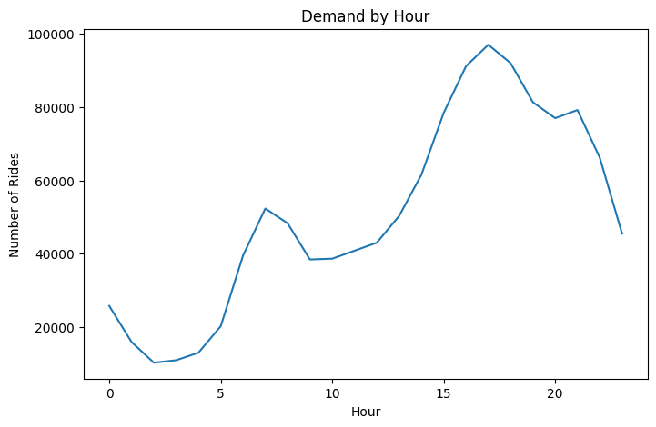
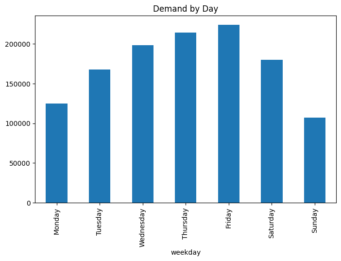
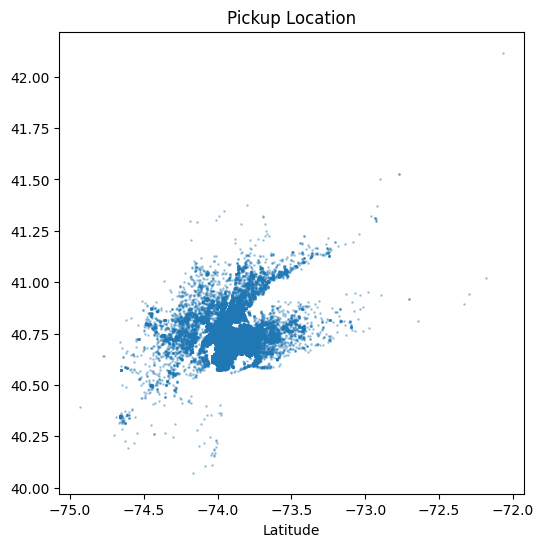

Ride-hailing platforms like Uber face a critical operational challenge: How can driver supply be dynamically aligned with demand to reduce rider wait times and maximize revenue? This project analyzes ride patterns across time and location to identify high-impact opportunities for driver allocation, surge pricing, and operational efficiency.
The dataset contains Uber Pickups data in New York City including timestamp, dispatch base, and pickup points. Data cleaning was performed to standardize time formats.
- Merged multiple datasets
- Converted timestamps into structured features - Hour, Day, Weekday
- Cleaned and validated ~1.2M records
- Analyzed demand patterns hourly, daily and by location
- Built visualizations to identify peak demand
Identifying peak hours with high demand.

Comparing number of bookings across different days.

Understanding demand patterns across pickup locations.

- Bimodal Demand Patterns: Demand peaks at 6-9 AM & 4-8 PM indicating commute behavior
- Friday shows extended peak from 5PM to late night and demand spills into early Saturday hours. Indicates work commute + Social activity
- Strong clustering in central NYC (Manhattan region)
- Spatial demand concentration indicates directional flow patterns that can be optimized for driver allocation and surge pricing
- Increase driver allocation 45-60 minutes before peak demand hours
- Introduce surge incentives in high-demand zones
- Focus on weekday commute windows and nightlife zones
- Concentrate drivers in high-density zones during mornings and dynamically redistribute outward in evenings